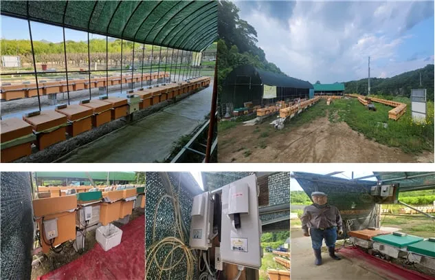
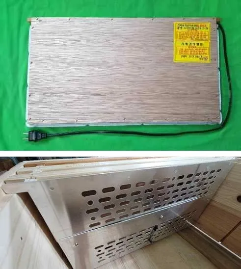
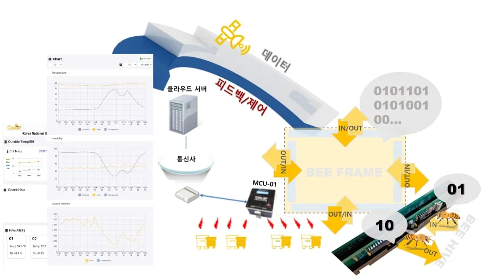

비 와도 괜찮나, 꿀 늘어나나…스마트 벌통 질문 5가지
2023년 12월 올라온 질문에 비온팜 홈페이지 답변…생활 방수 처리했고, 꿀 증가량은 정확히 말하기 어렵다

스마트 양봉 기업 온팜(브랜드 비온팜)은 2023년 12월 홈페이지 Q&A 게시판에 올라온 스마트 벌통 질문 5건에 답했다. 비가림 시설 없이 비를 맞아도 되는지, 휴대폰을 바꾸면 작업노트(앱 기록 기능)가 사라지는지 묻는 질문이 있었다. 꿀이 늘어나는지, 일반 가온판(벌통 안을 데우는 판)과 무엇이 다른지, 전기와 와이파이 없이도 설치할 수 있는지도 물었다.
비온팜은 꿀 생산량의 정확한 증가량은 말하기 어렵다고 답했다. 전력 공급이 어려운 양봉장을 위한 태양광 패널 벌통은 답변 당시 개발 중이라고 밝혔다. 질문은 2023년 12월 6일과 11일에 게시됐다.
비가림 시설 없어도 되나
비가림 시설(비를 막아 주는 지붕 시설)이 없는 양봉장에서 비가 오면 기계가 고장 나지 않겠느냐는 질문에, 비온팜은 제품을 한국 양봉장 환경에 맞게 만들려고 노력했다고 답했다. 답변에 따르면 기판과 센서는 케이스를 만들어 밖으로 드러나지 않게 했다. 생활 방수 처리와 설치 위치·구조 변경 등 여러 방법과 검증을 거쳐 물이 새지 않도록 만들었다고 한다.
비온팜은 “비에 대한 걱정은 하지 않으셔도 됩니다”라고도 했다. 방수 등급 같은 구체적인 수치는 답변에 나오지 않는다.
휴대폰 바꿔도 작업노트 남나
휴대폰에 작업노트를 적으면 휴대폰을 바꿀 때 기록이 없어지지 않느냐는 질문도 올라왔다. 비온팜은 작업노트가 손으로 쓰던 기존 기록과 달리 분실과 훼손 우려가 없다고 답했다. 기록이 휴대폰이 아니라 애플리케이션에 남기 때문에 휴대폰 기종을 바꾼 뒤에도 로그인만 하면 지난 기록을 볼 수 있다는 것이다.
비온팜은 작업노트 사용이 다소 익숙하지 않을 수 있지만 기록을 통해 보다 체계적인 사육이 가능할 것이라며 작업노트 기능은 더 편하게 쓸 수 있도록 개선하겠다고 밝혔다.
스마트 벌통 쓰면 꿀 늘어나나
벌이 시원찮아 꿀이 잘 들어오지 않는다며 스마트 벌통을 쓰면 꿀이 늘어나겠느냐고 물은 이도 있었다. 비온팜은 “정확한 증가량을 말씀드리긴 어렵지만”이라고 전제한 뒤 생육환경(꿀벌이 자라고 생활하는 환경)을 개선하는 것이 꿀벌 개체수를 늘리는 방법이라고 답했다. 이는 꿀 생산량 증가에도 영향을 미칠 것으로 본다고 했다.
비온팜은 제품을 만들 때 꿀벌의 생육환경 개선과 농가의 편의성을 중요하게 여긴다고 소개했다. 꿀의 양도 중요하지만 “꿀벌의 개체수가 적다면 벌꿀 양을 늘릴 기회도 없어집니다”라는 것이 비온팜의 답이다.
일반 가온판과 무엇이 다른가
양봉장에서 이미 가온판을 쓰고 있다는 질문자는 비온팜 가온판이 무엇이 다른지 물었다. 비온팜이 든 차이는 세 가지다. 알루미늄 판을 써서 열전도율을 높였기 때문에 벌통 내부 온도를 더 효율적으로 제어할 수 있다고 했다. 전원은 일반 가온판이 교류(AC) 220V, 비온팜 제품이 어댑터를 거친 직류(DC) 24V라고 했다. 발열 필름이 아닌 세라믹 발열체를 써서 물(수분)에 강하다는 점도 꼽았다.
비온팜은 이 때문에 “화재의 위험성이 현저히 낮습니다”라고 답했다. 농업에서 화재가 얼마나 무서운지 알기에 화재 위험을 낮추려고 많이 고민했다고 밝혔다. 답변에는 이를 뒷받침하는 시험 자료가 없다.
비온팜이 2025년 4월 홈페이지에 올린 소개서에도 비슷한 비교가 실렸다. 소개서가 지적한 기존 220V 제품의 감전·화재 위험은 벌통 난방기 화재·감전 위험…비온팜은 220V 대신 24V 기사에서 자세히 다뤘다.

사진: 위는 난방 필름을 쓴 기존 220V 가온기, 아래는 벌통 안에 건 비온팜의 24V 알루미늄 발열판. 비온팜 2025년 소개서의 비교 사진 두 장을 위아래로 붙였다 (자료: 비온팜)전기·와이파이 없어도 되나
전기나 와이파이가 없어도 설치할 수 있느냐는 질문에, 비온팜은 답변 당시 설치한 고정형 스마트 벌통은 전기가 필요하다고 답했다. 다만 이동 양봉과 전력 공급이 어려운 양봉장을 위해 태양광 패널을 붙인 스마트 벌통을 개발·제작하고 있다고 밝혔다. 이동 양봉은 꽃 피는 시기와 곳을 따라 벌통을 옮겨 다니는 양봉을 말한다. 비온팜은 “빠른 시일 내에 제품 선보이도록 노력하겠습니다”라고 했다.

그래픽: 비온팜 홈페이지 제품 소개에 실린 시스템 구성도. 벌통 쪽 장치(MCU-01)에서 통신사와 클라우드 서버를 거쳐 앱 그래프로 데이터가 이어지는 흐름을 그렸다 (자료: 비온팜)통신은 와이파이와 LTE(휴대전화 이동통신망) 두 방식이 있어 와이파이가 없어도 설치할 수 있다고 비온팜은 답했다. 두 방식을 함께 쓰면 안정적으로 운용할 수 있다고도 했다. 비온팜 2025년 소개서의 제품 구성표에도 외부환경 센서 장비(모델명 BO-W100) 항목에 ‘WiFi / 4G LTE’가 적혀 있다.
외딴 양봉장의 통신 문제는 해외 조사에서도 걸림돌로 꼽혔다. 2025년 학술지 ‘저널 오브 어피컬처럴 리서치(Journal of Apicultural Research)’에 실린 호주 매쿼리대 Sattler 등의 조사에서 면담한 양봉가들은 벌통 센서를 썼든 안 썼든 거의 모두 비싼 값을 가장 큰 걸림돌로 꼽았고, 센서를 써 본 이들은 통신 문제를 그다음 어려움으로 들었다. 통신이 약한 곳으로 벌통을 옮기면 석 달 모은 자료가 쓸모없어진다는 양봉가도 있었다. 자세한 내용은 자료실 소개에서 볼 수 있다.
자료: 비온팜 홈페이지(2026년 10월 8일 확인), 비온팜 2025 소개서, Sattler 외(2025) Journal of Apicultural Research
저작권자 © 윙윙통신 무단 전재 및 재배포 금지